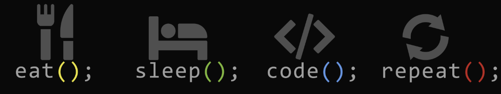

Bio
Nascido e criado em São Paulo, SP, sou casado e tenho uma filha linda. Sou apaixonado por elas. Sou uma pessoa caseira,
que gosta muito de assistir filmes e séries, a muito tempo atrás, também gostava de esportes, hoje eu apenas gosto de assistir.
Amo viajar e conhecer diferentes culturas, principalmente locais tropicais. Também gosto de programar e aprender mais sobre novas
tecnologias, atualmente engajado em aprender mais sobre microserviços .
Perfil
- Realista
- Pensamento crítico
- Facilidade em se adaptar com novas tecnologias
E o futuro ?
Muitas vezes sou questionado sobre o que eu almejo para daqui a 1 ano, 5 anos ou mesmo x anos. o que mais me
motiva/interessa é trabalhar na área técnica, seja como um desenvolvedor, ponto focal ou até mesmo um líder
técnico